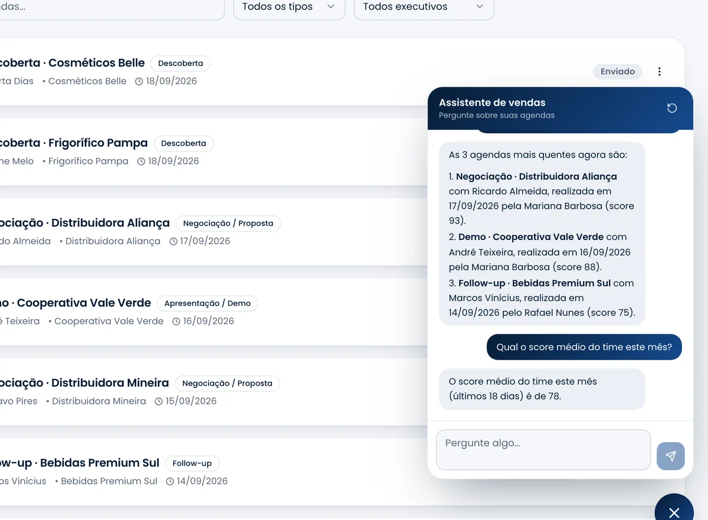

Sales Coach
salescoach.app.br
Sales Coach
salescoach.app.br
A qualquer momento
Pergunte.
Ele responde com as reuniões de verdade.
Com nome do lead, data, vendedor e nota de cada uma.
Assistente

Sales Coach
salescoach.app.br
Com nome do lead, data, vendedor e nota de cada uma.
